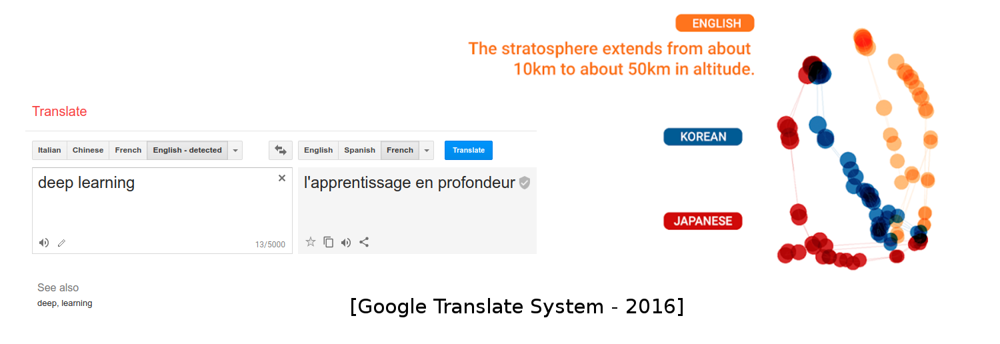
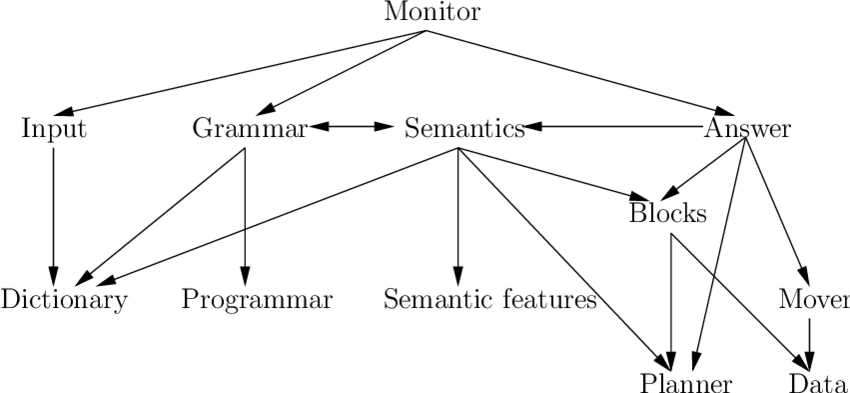
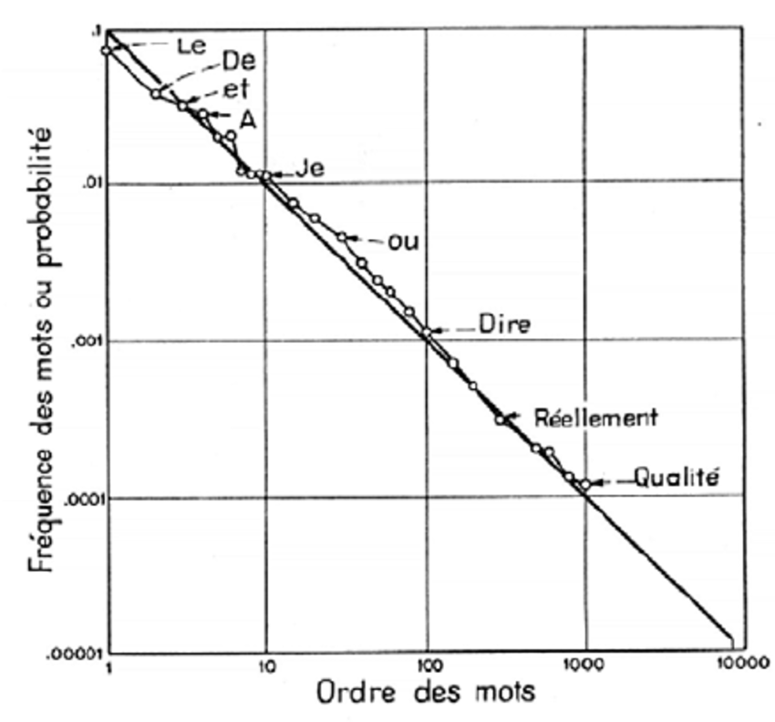
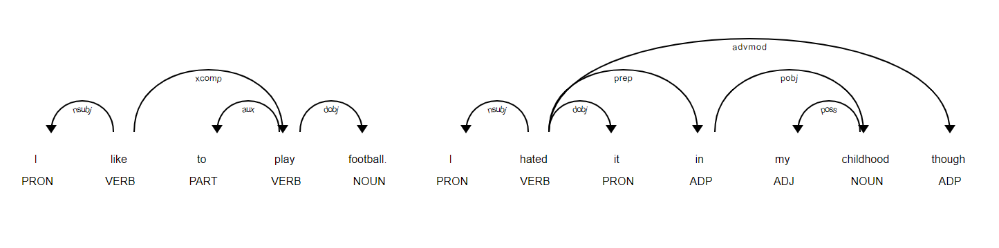
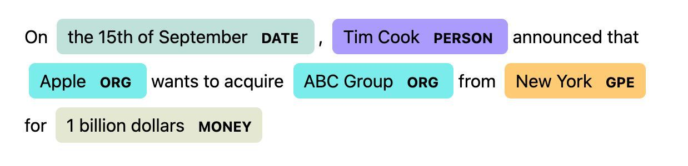
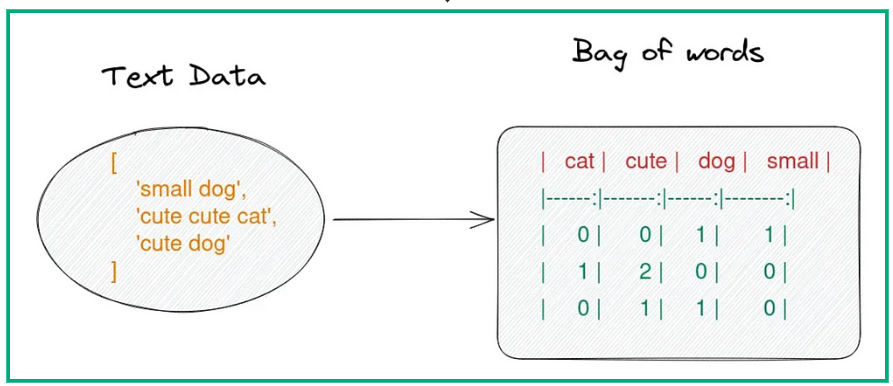
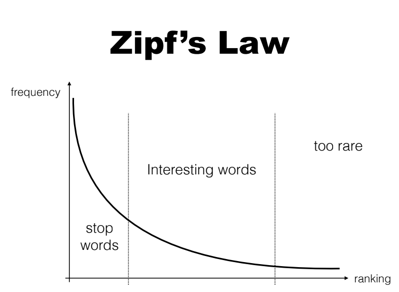
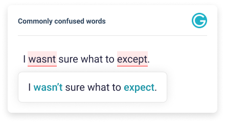

class: center, middle # Classical Natural Language Processing Roman Yurchak <!-- .affiliations[  ] --> --- ## Today's lecture - Introduction to NLP - Tokenization - Classical NLP techniques - Bag of words and n-gram models --- ## What is Natural Language Processing? - Combines computer science, artificial intelligence, and linguistics. - **Objective**: Enable computers to understand, interpret, and respond to human language in a valuable way. - **Applications**: Text translation, sentiment analysis, chatbots, voice recognition, and more. .center[ <br/>  ] --- ## NLP History: 1. Symbolic approaches - In 1960s and 1970s, dominance of *knowledge-based approaches*, requiring humans experts to encode knowledge into computers. - **Disadvantage**: required substantial human effort. .center[ <br/>  <small>*Structure of SHRDLU (NLU project, 1968)*</small> ] --- ## NLP History: 2. Statistical approaches - Infer language properties from language samples - Since 1980s, an empirical revolution took place. Inspired by information theory, it began using *probabilistic approaches* in NLP. - **Disadvantage**: It is required hand-crafted features. .center[ <br/>  <small>*Frequency-rank Zipf's law for French [Mandelbrot (1965)]*</small> ] --- ## NLP History: 3. deep learning approaches - It is a feature-engineering embedded neural approach. - Since 2010s, it has been gaining a lot of attentions and showing many successes. --- ## Regular expressions A sequence of characters that forms a search pattern. Used for string searching and manipulation. ```py import re # Find all email addresses in a text text = "Contact us at info@example.com or support@example.net" pattern = r'\b[A-Za-z0-9._%+-]+@[A-Za-z0-9.-]+\.[A-Z|a-z]{2,}\b' print(re.findall(pattern, text)) ``` - **Advantages**: Fast, quick to write, widely used. - **Disadvantages**: Hard to cover all edge cases, hard to maintain, can become unreadable. See Python regexp [documentation](https://docs.python.org/3/library/re.html). --- ## Tokenization Tokenization is the process of breaking a stream of text up into words, phrases, symbols, or other meaningful elements called tokens. ```py >>> s = "This is a sentence" >>> s.split() ['This', 'is', 'a', 'sentence'] ``` A crucial step in text preprocessing (and a prerequisite for many other NLP tasks). **Challenges** - Dealing with punctuation, contractions (e.g., "don't"), and other linguistic nuances. - Multi-word Expressions ("New-York") **Tools**: <small>regexp, NLTK, spaCy, many deep learning models come with their tokenizer.</small> --- ## Stemming and Lemmatization *Problem*: how do deal with different forms of the same word? (*e.g. "etudes", "étude", "étudiant"*) -- **Stemming**: heuristic process that chops off the ends of words. (*e.g. "étudiant" -> "étud"*) - Fast but crude -- **Lemmatization**: uses a vocabulary and morphological analysis to find the base word form (*e.g. "ai" -> "avoir"*) - Slower, language dependent, can still be inaccurate *In practice:* does not always improve performance of downstream tasks. Rendered unnecessary by sub-word tokenization. --- ## Part-of-speech (POS) tagging Process of assigning a part of speech (like noun, verb, adjective, etc.) to each word in a sentence. Crucial for understanding the grammatical structure and meaning. ```py import spacy nlp = spacy.load('fr_core_news_sm') doc = nlp("Les chats aiment dormir sur le sofa.") for token in doc: print(f'{token.text:15} [{token.pos_}] ', end="") # Les [DET] chats [NOUN] aiment [VERB] dormir [VERB] sur [ADP] le [DET] # sofa [NOUN] .[PUNCT] ``` .center[ <br/>  ] --- ## Named entity recognition (NER) Identifying and classifying key information (entities) in text into predefined categories such as names, locations, dates, etc. ```python import spacy # Load French model nlp = spacy.load('fr_core_news_sm') # Process the sentence sentence = "Bruno est allé à Saint-Malo." doc = nlp(sentence) print([(entity.text, entity.label_) for entity in doc.ents]) ## [('Bruno', 'PER'), ('Saint-Malo', 'LOC')] ``` .center[ <br />  <br /> <small>*Example of NER using Spacy*</small> ] --- ## Bag of words (BoW) model Represents text data as a "bag" of words without considering grammar and word order. Tokenization → Create vocabulary → Count word occurrences and vectorize .center[ <br />  ] Essentially one hot encoding each word in the vocabulary, and adding up the vectors for each word in the document. --- ## N-gram models A contiguous sequence of n items from a given sample of text or speech. .center[ <br /> <img src="images/ngrams.png" style="width: 600px;" /> ] Tokens can be words, characters, or sub-words. - Capture some word order information and context. - Does not capture long-range dependencies between words. --- ## Word frequency distribution Not all words are equally important. .center[  <br /> <small>Zipf law: the frequency of a word is inversely proportional to its rank in the frequency table.</small> ] --- ## Stop words Problem of non informative high frequency words. Possible solution: using a stop word list. ```py # Some of the stop words in French ['a', 'au', 'le', 'la', 'un', ..] ``` - Stop word lists available per language. Can be extended with domain specific words. - Difficult to define a universal stop word list. --- ## Term frequency weighting / TF-IDF Dealing with the problem of word frequency distribution. - **Term frequency (TF)**: raw count of a term in a document. - **Document frequency (DF)**: number of documents in the corpus that contain the term. - **Inverse document frequency (IDF)**: $\log \frac{N}{DF}$, where $N$ is the total number of documents in the corpus. Finally: word weight is given by $TF \times IDF$ Used in search engine scoring, text mining, and document clustering Not the only way to weight words but a good baseline (also see BM25) --- ## Document normalization and similarity Documents can have different lengths. How to compare them? **Typical solution**: normalize the document vectors by their length (L1 norm) or using L2 norm. **Similarity:** cosine similarity between two vectors $\mathbf{u}$ and $\mathbf{v}$ is defined as: $$\cos(\mathbf{u}, \mathbf{v}) = \frac{\mathbf{u} \cdot \mathbf{v}}{\||\mathbf{u}\||_2 \||\mathbf{v}\||_2}$$ or dot product of the normalized vectors. --- ## Text vectorization in scikit-learn - Regexp vectorizer (`'\b\w\w+\b'`) - Counting term frequency into a sparse matrix - Using TF-IDF weighting and L2 normalization ```py >>> from sklearn.feature_extraction.text import TfidfVectorizer >>> vectorizer = TfidfVectorizer(stop_words='english', max_df=0.6) >>> text = ["The quick brown fox", "a big dog.", "The fox"] >>> X = vectorizer.fit_transform(text) <3x4 sparse matrix of type '<class 'numpy.float64'>' with 4 stored elements in Compressed Sparse Row format> >>> X.toarray() array([[0. , 0.70710678, 0. , 0.70710678], [0.70710678, 0. , 0.70710678, 0. ], [0. , 0. , 0. , 0. ]]) >>> vectorizer.get_feature_names_out() array(['big', 'brown', 'dog', 'quick'], dtype=object) ``` --- ## Text classification The resulting high-dimensional sparse vectors can be used as input to a classifier. - Naive Bayes - Logistic regression - Linear SVM ```py from sklearn.feature_extraction.text import TfidfVectorizer from sklearn.linear_model import LogisticRegression from sklearn.pipeline import make_pipeline model = make_pipeline(TfidfVectorizer(), LogisticRegression()) model.fit(text_data, labels) ``` - **Advantages**: simple, fast, and effective. (western) language independent. - **Disadvantages**: does not capture word order, does not work well with rare words. --- ## Document clustering Document vectors + distance metric => can use clustering algorithms. *Note*: cosine similarity is not a distance metric (it does not satisfy the triangle inequality). .center[ <br /> <small>Zipf law: the frequency of a word is inversely proportional to its rank in the frequency table.</small> ] --- ## Search and information retrieval Provide quick, relevant, and comprehensive access to information in response to a query. **Key steps** - Query processing: tokenization, normalization, and weighting - Indexing: avoid re-parsing the whole corpus - Ranking: list most relevant documents first **Techniques** - Boolean search by exact match: AND, OR, NOT operators - Vector space model: cosine similarity between query and document vectors - Semantic search: word embeddings, deep learning --- ## Application: spellchecking Correct and identify misspelled words in a text. **Steps** - Identify misspelled words - Generate candidate corrections and rank them by likelihood - Dictionnary based methods (and edit distance) - n-gram models based methods .center[  ] --- ## Application: auto-suggestion Predict a word or phrase that the user intends to type, improving user experience **Steps** - Process the text corpus to build a language model - Given a prefix, predict the most likely next word .center[ <img src="images/sf_autocomplete_search.jpg" style="width: 700px;" /> ] --- ## Conclusions **Classical NLP** is based on: Rule-based systems, statistical methods, and shallow machine learning models. **Pros** - Efficient on small datasets, easy to implement. - Transparent and interpretable algorithms. **Cons** - Requires extensive feature engineering. - Struggles with understanding context and ambiguities in language. --- class: middle, center # Lab 6: back here in 15 min!